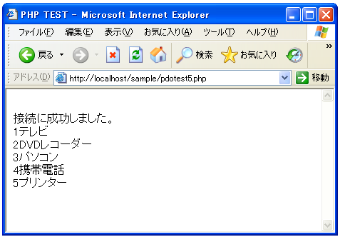

queryメソッド
データベースに接続した後で、実際にSQL文をデータベースに発行して様々な処理を行います。
1回だけ使用するようなSQL文をデータベースへ送信するにはPDOクラスで用意されている"query"メソッドを使います。
PDO::query PDOStatement PDO::query ( string statement )
PDO::query() は、一回の関数コールの中で SQL ステートメントを実行し、この ステートメントにより返された 結果セット (ある場合) を PDOStatement オブ ジェクトとして返します。 PDO::query() を次にコールする前に 結果セット内の全てのデータを取得しない 場合、そのコールは失敗します。 PDOStatement::closeCursor() をコールし、 次に PDO::query() をコールする前に PDOStatement オブジェクトに関連付けら れたリソースを解放してください。 引数： statement 準備、発行する SQL ステートメント。 返り値： PDOStatementオブジェクトを返します。
引数に指定したSQL文をデータベースに対して発行してくれます。その結果としてSQL文を発行した結果が含まれているPDOStatementクラスのオブジェクトを返してくれます。
例えば下記のようになります。
$sql = 'select id, name from shouhin'; $stmt = $dbh->query($sql);
データの取得
PDOStatementクラスのオブジェクトから実際の値を取り出すにはPDOStatementクラスで用意されている"fetch"メソッドを使います。
PDOStatement::fetch
mixed PDOStatement::fetch ([int fetch_style
[, int cursor_orientation [, int cursor_offset]]])
PDOStatementオブジェクトに関連付けられた結果セットから1行取得します。
fetch_style パラメータは、PDO がその行をどの様に返すかを決定します。
引数：
fetch_style 次のレコードを呼び出し元に返す方法を制御します。 この値は、
PDO::FETCH_* 定数のどれかで、 PDO::FETCH_BOTHがデフォルトです。
cursor_orientation スクロール可能なカーソルを表す PDOStatement オブ
ジェクトの場合、 この値により呼び出し側に返される行を定義します。こ
の値は、PDO::FETCH_ORI_* 定数のどれかと する必要があり、
PDO::FETCH_ORI_NEXT がデフォルトとなっています。
offset
スクロール可能なカーソルを表すPDOStatementオブジェクトの場合で、
cursor_orientationパラメータが PDO::FETCH_ORI_ABSに設定された場合、
この値により 取得される結果セットの行の絶対位置が指定されます。
返り値：
配列やオブジェクトなどが返されます
次の1行の値を取得します。このメソッド実行後は次の行へ自動的に移動しますので、連続してこのメソッドを実行することで最初から最後までの行を順番に取得することが可能です。
スクロール可能なカーソルの利用については取りあえずやめておきますので、1番目の引数だけを見ておきます。これは結果セットからどのように対象の行を取り出すのかを指定するもので、PDO::FETCH_NUMを指定した場合には0から始まるカラム番号を添字とする配列を返します。また、PDO::FETCH_ASSOCを指定した場合にはカラム名で添字を付けた配列を返します。デフォルトのPDO::FETCH_BOTHの場合には、どちらの形でもアクセス可能な配列を返してくれます。
例として下記のようなSELECTを発行した場合で考えて見ます。
$sql = 'select id, name from shouhin'; $stmt = $dbh->query($sql);
PDO::FETCH_NUMを指定した場合は下記のようになります。
$sql = 'select id, name from shouhin'; $stmt = $dbh->query($sql); $result = $stmt->fetch(PDO::FETCH_ASSOC); print($result[0]); print($result[1]);
PDO::FETCH_ASSOCを指定した場合は下記のようになります。
$sql = 'select id, name from shouhin'; $stmt = $dbh->query($sql); $result = $stmt->fetch(PDO::FETCH_ASSOC); print($result['id']); print($result['name']);
PDO::FETCH_BOTHを指定した場合(又は引数を省略した場合)は、どちらの形式でも利用が可能です。
では実際に試してみます。
<html>
<head><title>PHP TEST</title></head>
<body>
<?php
$dsn = 'mysql:dbname=uriage;host=localhost';
$user = 'testuser';
$password = 'testuser';
try{
$dbh = new PDO($dsn, $user, $password);
print('<br>');
if ($dbh == null){
print('接続に失敗しました。<br>');
}else{
print('接続に成功しました。<br>');
}
$dbh->query('SET NAMES sjis');
$sql = 'select id, name from shouhin';
$stmt = $dbh->query($sql);
while($result = $stmt->fetch(PDO::FETCH_ASSOC)){
print($result['id']);
print($result['name'].'<br>');
}
}catch (PDOException $e){
print('Error:'.$e->getMessage());
die();
}
$dbh = null;
?>
</body>
</html>
上記ファイルをWWWサーバに設置しブラウザ経由で見ると下記のように表示されます。

( Written by Tatsuo Ikura )

著者 / TATSUO IKURA
初心者～中級者の方を対象としたプログラミング方法や開発環境の構築の解説を行うサイトの運営を行っています。